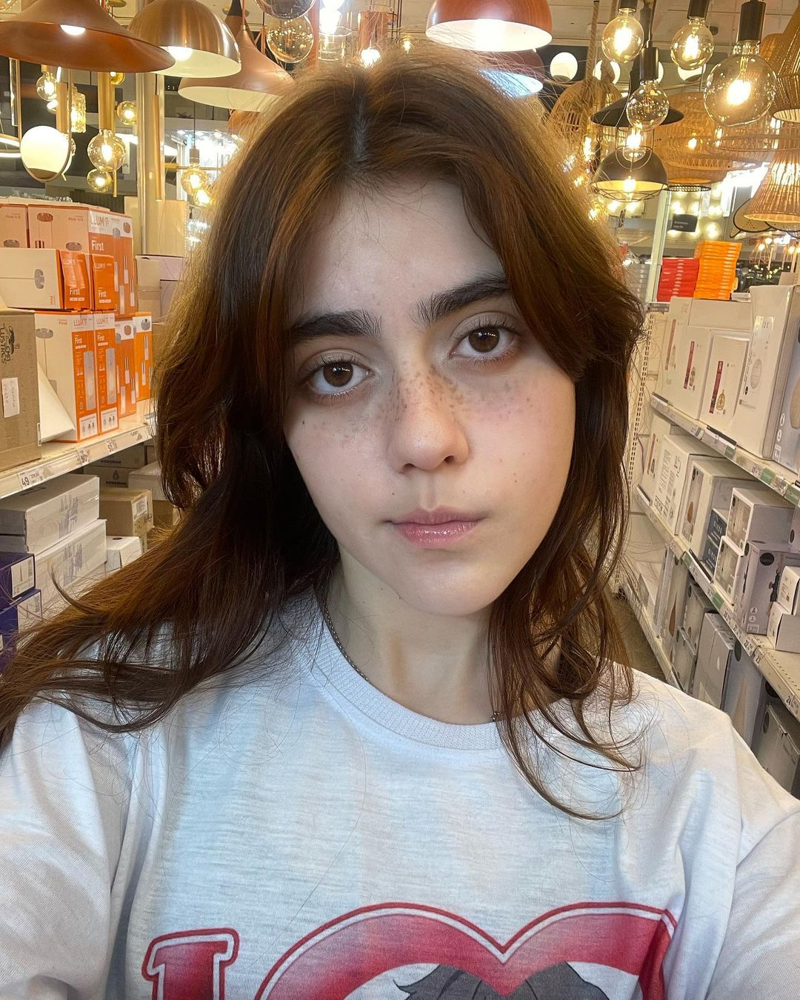

| Informacion personal | |
|---|---|
|  | Angela Oliveira Alves |
| ACERCA DE MI: | Soy un profesional apasionado por la tecnología y la innovación. Mi objetivo es contribuir al éxito de las empresas mediante mi experiencia en liderazgo de proyectos y mi capacidad para resolver problemas de manera eficiente. Tengo una sólida formación en informática y he trabajado en diversos proyectos exitosos en el campo de la gestión de proyectos ágiles. |
| CONTACTO: | ⚫Telefono: 55 3230 5130 ⚫Correo Electrónico: 0812oski@gmail.com ⚫Instagram: skkitlesgf ⚫Twitter: @skkitlesgf |
| EDUCACION: | ⚪Licenciatura en Ingeniería Civil-Universidad Nacional ⚪Maestría en Gestión de Proyectos-Universidad Central ⚪Cursos de especialización en Diseño Estructural y Sostenibilidad |
| HABILIDADES: | ➡Diseño y gestión de proyectos de construcción. ➡Conocimientos avanzados en software de diseño estructural. ➡Experiencia en proyectos sostenibles y ecológicos. ➡Excelentes habilidades de comunicación y liderazgo. ➡Resolución de problemas y toma de decisiones efectivas. |
| IDIOMAS: | -Español -Ingles |
| EXPERIENCIA: | Ingeniera de Proyectos - Constructora ABC -Duración: 5 años -María trabajó como ingeniera de proyectos en la Constructora ABC, donde participó en varios proyectos de construcción de infraestructuras importantes. Su papel incluyó la planificación, diseño y gestión de proyectos, así como la supervisión de equipos de trabajo en el sitio. Destacó por su capacidad para resolver problemas y tomar decisiones eficientes en situaciones desafiantes. |